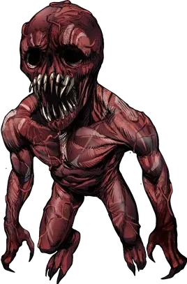

Zumbis de Sangue são criaturas paranormais de Sangue e são comuns obstáculos dos agentes em suas missões. O Zumbi de Sangue é o tipo de monstro mais comum que vaza para o nosso lado pela quantidade considerável de brutalidade que é comum em lugares com a membrana fraca. Essas criaturas são cegas, mas suas peles expostas são tão sensíveis que sentem dor nos mais sutis movimentos do ar, revelando a posição de seus alvos. Caso a pessoa, quando viva, possuía um alto nível de Exposição Paranormal; sofreu uma morte extremamente dolorosa e brutal; ou teve seu cadáver completamente devorado pelo Sangue, ela pode se tornar um Zumbi de Sangue mais animalesco, brutal e bestial.
Os Zumbis de Sangue surgem em locais onde a Membrana está fragilizada ou enfraquecida e há corpos mortos recentes. Especificamente, eles se manifestam a partir de cadáveres que foram mortos brutalmente e deixados abandonados nesses locais com a membrana comprometida.